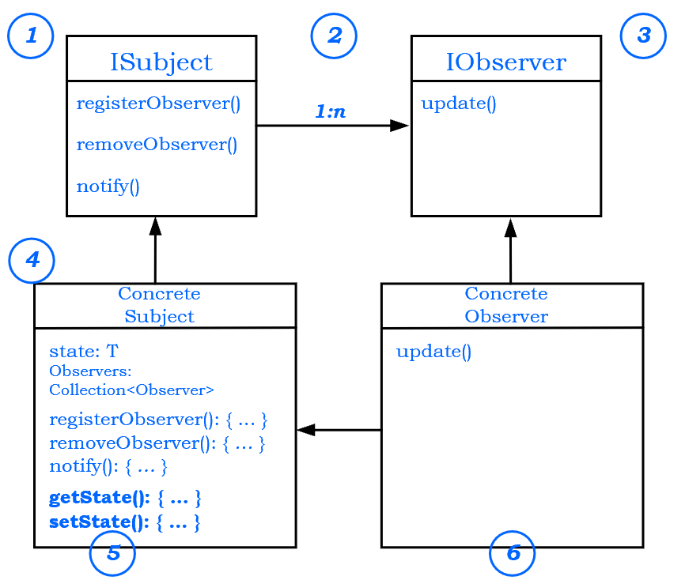

<!DOCTYPE html>
<html>
<head><meta name="generator" content="Hexo 3.8.0">
  <!-- hexo-inject:begin --><!-- hexo-inject:end --><meta charset="utf-8">
  

  
  <title>Observer Design Pattern = Publishers + Subscribers | TongTong Shi&#39;s Blog</title>
  <meta name="viewport" content="width=device-width, initial-scale=1, maximum-scale=1">
  <meta name="description" content="1. What Observer Pattern defined The Observer Pattern defines a one-to-many dependency between objects so that when one object changes state, all of its dependents are notified and updated automatica">
<meta name="keywords" content="Design Pattern">
<meta property="og:type" content="article">
<meta property="og:title" content="Observer Design Pattern = Publishers + Subscribers">
<meta property="og:url" content="http://yoursite.com/2019/09/24/observer-design-pattern/index.html">
<meta property="og:site_name" content="TongTong Shi&#39;s Blog">
<meta property="og:description" content="1. What Observer Pattern defined The Observer Pattern defines a one-to-many dependency between objects so that when one object changes state, all of its dependents are notified and updated automatica">
<meta property="og:locale" content="default">
<meta property="og:image" content="http://yoursite.com/2019/09/24/observer-design-pattern/observer1.png">
<meta property="og:image" content="http://yoursite.com/2019/09/24/observer-design-pattern/UML.png">
<meta property="og:image" content="http://yoursite.com/2019/09/24/observer-design-pattern/taji.png">
<meta property="og:image" content="http://yoursite.com/2019/09/24/observer-design-pattern/observer_result.png">
<meta property="og:updated_time" content="2019-10-07T19:04:38.713Z">
<meta name="twitter:card" content="summary">
<meta name="twitter:title" content="Observer Design Pattern = Publishers + Subscribers">
<meta name="twitter:description" content="1. What Observer Pattern defined The Observer Pattern defines a one-to-many dependency between objects so that when one object changes state, all of its dependents are notified and updated automatica">
<meta name="twitter:image" content="http://yoursite.com/2019/09/24/observer-design-pattern/observer1.png">
  
    <link rel="alternate" href="/atom.xml" title="TongTong Shi&#39;s Blog" type="application/atom+xml">
  
  
    <link rel="icon" href="/favicon.png">
  
  
    <link href="//fonts.googleapis.com/css?family=Source+Code+Pro" rel="stylesheet" type="text/css">
  
  <link rel="stylesheet" href="/css/style.css"><!-- hexo-inject:begin --><!-- hexo-inject:end -->
</head>
</html>
<body>
  <!-- hexo-inject:begin --><!-- hexo-inject:end --><div id="container">
    <div id="wrap">
      <header id="header">
  <div id="banner"></div>
  <div id="header-outer" class="outer">
    <div id="header-title" class="inner">
      <h1 id="logo-wrap">
        <a href="/" id="logo">TongTong Shi&#39;s Blog</a>
      </h1>
      
    </div>
    <div id="header-inner" class="inner">
      <nav id="main-nav">
        <a id="main-nav-toggle" class="nav-icon"></a>
        
          <a class="main-nav-link" href="/">Home</a>
        
          <a class="main-nav-link" href="/archives">Archives</a>
        
      </nav>
      <nav id="sub-nav">
        
          <a id="nav-rss-link" class="nav-icon" href="/atom.xml" title="RSS Feed"></a>
        
        <a id="nav-search-btn" class="nav-icon" title="Search"></a>
      </nav>
      <div id="search-form-wrap">
        <form action="//google.com/search" method="get" accept-charset="UTF-8" class="search-form"><input type="search" name="q" class="search-form-input" placeholder="Search"><button type="submit" class="search-form-submit">&#xF002;</button><input type="hidden" name="sitesearch" value="http://yoursite.com"></form>
      </div>
    </div>
  </div>
</header>
      <div class="outer">
        <section id="main"><article id="post-observer-design-pattern" class="article article-type-post" itemscope itemprop="blogPost">
  <div class="article-meta">
    <a href="/2019/09/24/observer-design-pattern/" class="article-date">
  <time datetime="2019-09-24T18:16:39.000Z" itemprop="datePublished">2019-09-24</time>
</a>
    
  </div>
  <div class="article-inner">
    
    
      <header class="article-header">
        
  
    <h1 class="article-title" itemprop="name">
      Observer Design Pattern = Publishers + Subscribers
    </h1>
  

      </header>
    
    <div class="article-entry" itemprop="articleBody">
      
        <h4 id="font-colordodgerblue1-what-observer-pattern-definedfont"><a class="markdownIt-Anchor" href="#font-colordodgerblue1-what-observer-pattern-definedfont"></a> <font color="dodgerblue">1. What Observer Pattern defined</font></h4>
<div style="background-color: LAVENDERBLUSH; padding: 10px">The <b>Observer Pattern</b> defines a <b><i>one-to-many</i></b> <b>dependency</b> between objects so that when one object changes state, all of its dependents are <b>notified and updated automatically</b>.</div>
<a id="more"></a>
<p>The following image is from book <strong>Head First Design Patterns</strong>.<br>
</p>
<p><font color="TURQUOISE"><strong>Points:</strong></font></p>
<ul>
<li><font color="MEDIUMSLATEBLUE">What does this have to do with <em>one-to-many</em> relationship</font><br>
With the observer pattern, the <strong>Subject</strong> is the object that contains the state and controls it. So, there is <strong>ONE subject with state</strong>. The <strong>observers</strong>, on the other hand use the state, even if they don’t own it. There are many observers and they rely on the Subject to tell them when its state changes. So there is a relationship between the <strong>ONE Subject</strong> to the <strong>MANY Observers</strong>.</li>
<li><font color="MEDIUMSLATEBLUE">How does dependence come into this?</font><br>
Because the subject is the <strong>sole owner of the data</strong>, the observers are dependent on teh subject to update them when the data changes. This leads to a cleaner OO design than allowing many objects to control the same data.</li>
</ul>
<h4 id="font-colordodgerblue2-structurefont"><a class="markdownIt-Anchor" href="#font-colordodgerblue2-structurefont"></a> <font color="dodgerblue">2. Structure</font></h4>
<p>The UML is shown as follows.<br>
</p>
<p><font color="TURQUOISE"><strong>Points:</strong></font></p>
<ol>
<li>Objects use this <code>ISubject</code> interface to register as observers and also to remove themselves from being observers.</li>
<li>Each subject can have many observers.</li>
<li>The <code>IObserver</code> interface just has one method <code>update()</code> that gets called when the subject’s state changes.</li>
<li>A concrete subject implements the <code>ISubject</code> interface. Besides the register and remove method, the concrete subject implements a <code>notify()</code> method which is used to update all the current observers.</li>
<li>The concrete subject may also have methods for setting and getting its state.</li>
<li>Concrete observers can be any class that implements the <code>IObserver</code> interface. Each observer registers with a concrete subject to receive updates.</li>
</ol>
<h4 id="font-colordodgerblue3-advantagesfont"><a class="markdownIt-Anchor" href="#font-colordodgerblue3-advantagesfont"></a> <font color="dodgerblue">3. Advantages</font></h4>
<p><font color="deepskyblue"><strong>The Observer Pattern provides an object design where subjects and observers are loosely coupled. Why?</strong></font></p>
<ul>
<li><font color="royalblue">The only thing the subject knows about an observer is that <strong>it implements a certain interface (the <code>Observer</code> interface)</strong>.</font> It doesn’t need to know the concrete class of the observer, what is does, or anything else about it.</li>
<li><font color="royalblue">We can add new observers at any time.</font></li>
<li><font color="royalblue">We never need to modify the subject to add new types of observers.</font></li>
<li><font color="royalblue">We can reuse subjects or observers independently of each other</font></li>
<li><font color="royalblue">Changes to either the subject or an observer will not affect the other (power of loosly coupled).</font></li>
</ul>
<p><font color="tomato"><strong>Tip about <em>Loosely coupled</em></strong></font></p>
<ul>
<li><font color="tomato"><strong>What</strong></font>: when two objects are loosely coupled, they can interact, but have very little knowledge of each other.</li>
<li><font color="tomato"><strong>Advantage</strong></font>: allow us to build flexible OO systems that can handle change because they minimize the interdependency between objects.</li>
</ul>

<h4 id="font-colordodgerblue4-examplefont"><a class="markdownIt-Anchor" href="#font-colordodgerblue4-examplefont"></a> <font color="dodgerblue">4. Example</font></h4>
<p>In this example, a weather station example will introduced. Through subscribing Weather stations in different states, the local residents can get the latest weather condition.</p>
<p><font color="deepskyblue"><strong>Step 1: Create interfaces</strong></font></p>
<ul>
<li><code>WeatherStation</code> : the Subject interface</li>
</ul>
<figure class="highlight java"><table><tr><td class="gutter"><pre><span class="line">1</span><br><span class="line">2</span><br><span class="line">3</span><br><span class="line">4</span><br><span class="line">5</span><br><span class="line">6</span><br><span class="line">7</span><br><span class="line">8</span><br></pre></td><td class="code"><pre><span class="line"><span class="keyword">public</span> <span class="class"><span class="keyword">interface</span> <span class="title">WeatherStation</span> </span>&#123;</span><br><span class="line"></span><br><span class="line">    <span class="function">String <span class="title">registerObserver</span><span class="params">(Observer observer)</span></span>;</span><br><span class="line"></span><br><span class="line">    <span class="function">String <span class="title">removeObserver</span><span class="params">(Observer observer)</span></span>;</span><br><span class="line"></span><br><span class="line">    <span class="function"><span class="keyword">void</span> <span class="title">notifyObservers</span><span class="params">()</span></span>;</span><br><span class="line">&#125;</span><br></pre></td></tr></table></figure>
<ul>
<li><code>Observer</code>: the Observer interface</li>
</ul>
<figure class="highlight java"><table><tr><td class="gutter"><pre><span class="line">1</span><br><span class="line">2</span><br><span class="line">3</span><br></pre></td><td class="code"><pre><span class="line"><span class="keyword">public</span> <span class="class"><span class="keyword">interface</span> <span class="title">Observer</span> </span>&#123;</span><br><span class="line">    <span class="function"><span class="keyword">void</span> <span class="title">update</span><span class="params">(<span class="keyword">float</span> temp, <span class="keyword">float</span> humi, <span class="keyword">float</span> pres)</span></span>;</span><br><span class="line">&#125;</span><br></pre></td></tr></table></figure>
<ul>
<li><code>Display</code> : used to show the weather data</li>
</ul>
<figure class="highlight java"><table><tr><td class="gutter"><pre><span class="line">1</span><br><span class="line">2</span><br><span class="line">3</span><br></pre></td><td class="code"><pre><span class="line"><span class="keyword">public</span> <span class="class"><span class="keyword">interface</span> <span class="title">Display</span> </span>&#123;</span><br><span class="line">    <span class="function"><span class="keyword">void</span> <span class="title">displayWeatherData</span> <span class="params">()</span></span>;</span><br><span class="line">&#125;</span><br></pre></td></tr></table></figure>
<p><font color="deepskyblue"><strong>Step 2: Concrete Subject</strong></font></p>
<ul>
<li><code>DemaciaWeatherStation</code> : the weather station in Demacia, reports data includes temperature, humidity, pressure.</li>
</ul>
<details>
	<summary>CODE</summary>
<figure class="highlight java"><table><tr><td class="gutter"><pre><span class="line">1</span><br><span class="line">2</span><br><span class="line">3</span><br><span class="line">4</span><br><span class="line">5</span><br><span class="line">6</span><br><span class="line">7</span><br><span class="line">8</span><br><span class="line">9</span><br><span class="line">10</span><br><span class="line">11</span><br><span class="line">12</span><br><span class="line">13</span><br><span class="line">14</span><br><span class="line">15</span><br><span class="line">16</span><br><span class="line">17</span><br><span class="line">18</span><br><span class="line">19</span><br><span class="line">20</span><br><span class="line">21</span><br><span class="line">22</span><br><span class="line">23</span><br><span class="line">24</span><br><span class="line">25</span><br><span class="line">26</span><br><span class="line">27</span><br><span class="line">28</span><br><span class="line">29</span><br><span class="line">30</span><br><span class="line">31</span><br><span class="line">32</span><br><span class="line">33</span><br><span class="line">34</span><br><span class="line">35</span><br><span class="line">36</span><br><span class="line">37</span><br><span class="line">38</span><br><span class="line">39</span><br><span class="line">40</span><br><span class="line">41</span><br><span class="line">42</span><br><span class="line">43</span><br><span class="line">44</span><br><span class="line">45</span><br><span class="line">46</span><br><span class="line">47</span><br><span class="line">48</span><br><span class="line">49</span><br><span class="line">50</span><br><span class="line">51</span><br><span class="line">52</span><br><span class="line">53</span><br><span class="line">54</span><br><span class="line">55</span><br><span class="line">56</span><br><span class="line">57</span><br><span class="line">58</span><br><span class="line">59</span><br><span class="line">60</span><br><span class="line">61</span><br><span class="line">62</span><br><span class="line">63</span><br><span class="line">64</span><br><span class="line">65</span><br><span class="line">66</span><br><span class="line">67</span><br><span class="line">68</span><br><span class="line">69</span><br><span class="line">70</span><br><span class="line">71</span><br><span class="line">72</span><br></pre></td><td class="code"><pre><span class="line"><span class="keyword">public</span> <span class="class"><span class="keyword">class</span> <span class="title">DemaciaWeatherStation</span> <span class="keyword">implements</span> <span class="title">WeatherStation</span></span>&#123;</span><br><span class="line"></span><br><span class="line">    <span class="comment">// some states reflecting the weather in demacia</span></span><br><span class="line">    <span class="keyword">private</span> <span class="keyword">float</span> temperature;</span><br><span class="line">    <span class="keyword">private</span> <span class="keyword">float</span> humidity;</span><br><span class="line">    <span class="keyword">private</span> <span class="keyword">float</span> pressure;</span><br><span class="line"></span><br><span class="line">    <span class="comment">// observers</span></span><br><span class="line">    <span class="keyword">private</span> List&lt;Observer&gt; observers;</span><br><span class="line"></span><br><span class="line">    <span class="comment">/*</span></span><br><span class="line"><span class="comment">    * constructor</span></span><br><span class="line"><span class="comment">    * */</span></span><br><span class="line">    <span class="function"><span class="keyword">public</span> <span class="title">DemaciaWeatherStation</span><span class="params">()</span> </span>&#123;</span><br><span class="line">        <span class="keyword">this</span>.observers = <span class="keyword">new</span> ArrayList&lt;&gt;();</span><br><span class="line">    &#125;</span><br><span class="line"></span><br><span class="line"></span><br><span class="line">    <span class="comment">/*</span></span><br><span class="line"><span class="comment">    * set weather data</span></span><br><span class="line"><span class="comment">    * */</span></span><br><span class="line">    <span class="function"><span class="keyword">public</span> <span class="keyword">void</span> <span class="title">setWeatherData</span><span class="params">(<span class="keyword">float</span> temperature, <span class="keyword">float</span> humidity, <span class="keyword">float</span> pressure)</span> </span>&#123;</span><br><span class="line">        <span class="keyword">this</span>.temperature = temperature;</span><br><span class="line">        <span class="keyword">this</span>.humidity = humidity;</span><br><span class="line">        <span class="keyword">this</span>.pressure = pressure;</span><br><span class="line">        measurementsChanged();</span><br><span class="line">    &#125;</span><br><span class="line"></span><br><span class="line">    <span class="function"><span class="keyword">public</span> <span class="keyword">void</span> <span class="title">measurementsChanged</span> <span class="params">()</span> </span>&#123;</span><br><span class="line">        notifyObservers();</span><br><span class="line">    &#125;</span><br><span class="line"></span><br><span class="line"></span><br><span class="line">    <span class="meta">@Override</span></span><br><span class="line">    <span class="function"><span class="keyword">public</span> String <span class="title">registerObserver</span><span class="params">(Observer observer)</span> </span>&#123;</span><br><span class="line">        <span class="keyword">if</span> (observer <span class="keyword">instanceof</span> DemaciaObserver) &#123;</span><br><span class="line">            <span class="keyword">if</span> (<span class="keyword">this</span>.observers.contains(observer))</span><br><span class="line">                <span class="keyword">throw</span> <span class="keyword">new</span> RuntimeException(<span class="string">"This observer has already been registered."</span>);</span><br><span class="line"></span><br><span class="line">            <span class="keyword">this</span>.observers.add(observer);</span><br><span class="line">            <span class="keyword">return</span> <span class="string">"Success!"</span>;</span><br><span class="line">        &#125; <span class="keyword">else</span> &#123;</span><br><span class="line">            <span class="keyword">throw</span> <span class="keyword">new</span> RuntimeException(<span class="string">"You have registered a wrong channel."</span>);</span><br><span class="line">        &#125;</span><br><span class="line"></span><br><span class="line">    &#125;</span><br><span class="line"></span><br><span class="line">    <span class="meta">@Override</span></span><br><span class="line">    <span class="function"><span class="keyword">public</span> String <span class="title">removeObserver</span><span class="params">(Observer observer)</span> </span>&#123;</span><br><span class="line"></span><br><span class="line">        <span class="keyword">if</span> (observer <span class="keyword">instanceof</span> DemaciaObserver) &#123;</span><br><span class="line">            <span class="keyword">if</span> (!<span class="keyword">this</span>.observers.contains(observer))</span><br><span class="line">                <span class="keyword">throw</span> <span class="keyword">new</span> RuntimeException(<span class="string">"This observer does not exist"</span>);</span><br><span class="line"></span><br><span class="line">            <span class="keyword">this</span>.observers.remove(observer);</span><br><span class="line">            <span class="keyword">return</span> <span class="string">"Success!"</span>;</span><br><span class="line"></span><br><span class="line">        &#125; <span class="keyword">else</span> &#123;</span><br><span class="line"></span><br><span class="line">            <span class="keyword">throw</span> <span class="keyword">new</span> RuntimeException(<span class="string">"Unexpected observer type."</span>);</span><br><span class="line"></span><br><span class="line">        &#125;</span><br><span class="line">    &#125;</span><br><span class="line"></span><br><span class="line">    <span class="meta">@Override</span></span><br><span class="line">    <span class="function"><span class="keyword">public</span> <span class="keyword">void</span> <span class="title">notifyObservers</span><span class="params">()</span> </span>&#123;</span><br><span class="line">        <span class="keyword">for</span> (Observer observer: <span class="keyword">this</span>.observers) &#123;</span><br><span class="line">            DemaciaObserver demaciaObserver = (DemaciaObserver) observer;</span><br><span class="line">            demaciaObserver.update(<span class="keyword">this</span>.temperature, <span class="keyword">this</span>.humidity, <span class="keyword">this</span>.pressure);</span><br><span class="line">        &#125;</span><br><span class="line">    &#125;</span><br><span class="line">&#125;</span><br></pre></td></tr></table></figure>
</details>
<p><font color="deepskyblue"><strong>Step 3: Concrete Observer</strong></font></p>
<ul>
<li><code>DemaciaObserver</code> : the observer in Demacia.</li>
</ul>
<details>
	<summary>CODE</summary>
<figure class="highlight java"><table><tr><td class="gutter"><pre><span class="line">1</span><br><span class="line">2</span><br><span class="line">3</span><br><span class="line">4</span><br><span class="line">5</span><br><span class="line">6</span><br><span class="line">7</span><br><span class="line">8</span><br><span class="line">9</span><br><span class="line">10</span><br><span class="line">11</span><br><span class="line">12</span><br><span class="line">13</span><br><span class="line">14</span><br><span class="line">15</span><br><span class="line">16</span><br><span class="line">17</span><br><span class="line">18</span><br><span class="line">19</span><br><span class="line">20</span><br><span class="line">21</span><br><span class="line">22</span><br><span class="line">23</span><br><span class="line">24</span><br><span class="line">25</span><br><span class="line">26</span><br><span class="line">27</span><br><span class="line">28</span><br></pre></td><td class="code"><pre><span class="line"><span class="keyword">public</span> <span class="class"><span class="keyword">class</span> <span class="title">DemaciaObserver</span> <span class="keyword">implements</span> <span class="title">Observer</span>, <span class="title">Display</span> </span>&#123;</span><br><span class="line"></span><br><span class="line">    <span class="keyword">private</span> <span class="keyword">float</span> temperature;</span><br><span class="line">    <span class="keyword">private</span> <span class="keyword">float</span> humidity;</span><br><span class="line">    <span class="keyword">private</span> <span class="keyword">float</span> pressure;</span><br><span class="line"></span><br><span class="line">    <span class="keyword">private</span> WeatherStation weatherStation;</span><br><span class="line"></span><br><span class="line">    <span class="function"><span class="keyword">public</span> <span class="title">DemaciaObserver</span><span class="params">(WeatherStation weatherStation)</span> </span>&#123;</span><br><span class="line">        <span class="keyword">this</span>.weatherStation = weatherStation;</span><br><span class="line">        <span class="keyword">this</span>.weatherStation.registerObserver(<span class="keyword">this</span>);</span><br><span class="line">    &#125;</span><br><span class="line"></span><br><span class="line">    <span class="meta">@Override</span></span><br><span class="line">    <span class="function"><span class="keyword">public</span> <span class="keyword">void</span> <span class="title">update</span><span class="params">(<span class="keyword">float</span> temp, <span class="keyword">float</span> humi, <span class="keyword">float</span> pres)</span> </span>&#123;</span><br><span class="line">        <span class="keyword">this</span>.temperature = temp;</span><br><span class="line">        <span class="keyword">this</span>.humidity = humi;</span><br><span class="line">        <span class="keyword">this</span>.pressure = pres;</span><br><span class="line">        displayWeatherData();</span><br><span class="line">    &#125;</span><br><span class="line"></span><br><span class="line">    <span class="meta">@Override</span></span><br><span class="line">    <span class="function"><span class="keyword">public</span> <span class="keyword">void</span> <span class="title">displayWeatherData</span><span class="params">()</span> </span>&#123;</span><br><span class="line">        System.out.println(<span class="string">"Current weather in Demacia is:"</span>);</span><br><span class="line">        System.out.println(<span class="string">"Temperature: "</span> + <span class="keyword">this</span>.temperature + <span class="string">" ; "</span> </span><br><span class="line">        	+ <span class="string">"Humidity: "</span> + <span class="keyword">this</span>.humidity + <span class="string">" ; "</span> </span><br><span class="line">        	+ <span class="string">"Pressure: "</span> + <span class="keyword">this</span>.pressure);</span><br><span class="line">    &#125;</span><br></pre></td></tr></table></figure>
</details>
<p><font color="deepskyblue"><strong>Final Setp: Let’s test it!</strong></font></p>
<details>
	<summary>CODE</summary>
<figure class="highlight java"><table><tr><td class="gutter"><pre><span class="line">1</span><br><span class="line">2</span><br><span class="line">3</span><br><span class="line">4</span><br><span class="line">5</span><br><span class="line">6</span><br><span class="line">7</span><br><span class="line">8</span><br><span class="line">9</span><br><span class="line">10</span><br><span class="line">11</span><br><span class="line">12</span><br><span class="line">13</span><br><span class="line">14</span><br></pre></td><td class="code"><pre><span class="line"><span class="keyword">public</span> <span class="class"><span class="keyword">class</span> <span class="title">TestObserver</span> </span>&#123;</span><br><span class="line"></span><br><span class="line">    <span class="function"><span class="keyword">public</span> <span class="keyword">static</span> <span class="keyword">void</span> <span class="title">main</span><span class="params">(String[] args)</span> </span>&#123;</span><br><span class="line"></span><br><span class="line">        WeatherStation dWeatherStation = <span class="keyword">new</span> DemaciaWeatherStation();</span><br><span class="line"></span><br><span class="line">        DemaciaObserver Garen = <span class="keyword">new</span> DemaciaObserver(dWeatherStation);</span><br><span class="line">        DemaciaObserver Lux = <span class="keyword">new</span> DemaciaObserver(dWeatherStation);</span><br><span class="line"></span><br><span class="line">        ((DemaciaWeatherStation) dWeatherStation).setWeatherData(<span class="number">35</span>, <span class="number">2</span>, <span class="number">1</span>);</span><br><span class="line"></span><br><span class="line">        ((DemaciaWeatherStation) dWeatherStation).setWeatherData(<span class="number">40</span>, <span class="number">5</span>, <span class="number">1</span>);</span><br><span class="line">    &#125;</span><br><span class="line">&#125;</span><br></pre></td></tr></table></figure>
</details>
<p>The output is<br>
</p>
<p>From the above result we can see if the local subscribed the weather station, after the weather station notified them, then they could get the latest information.</p>

      
    </div>
    <footer class="article-footer">
      <a data-url="http://yoursite.com/2019/09/24/observer-design-pattern/" data-id="ck1hylx4901feq4veq5ih6ze5" class="article-share-link">Share</a>
      
      
  <ul class="article-tag-list"><li class="article-tag-list-item"><a class="article-tag-list-link" href="/tags/Design-Pattern/">Design Pattern</a></li></ul>

    </footer>
  </div>
  
    
<nav id="article-nav">
  
    <a href="/2019/09/25/command-design-pattern/" id="article-nav-newer" class="article-nav-link-wrap">
      <strong class="article-nav-caption">Newer</strong>
      <div class="article-nav-title">
        
          Command Design Pattern - Encapsulating Invocation
        
      </div>
    </a>
  
  
    <a href="/2019/09/24/builder-design-pattern/" id="article-nav-older" class="article-nav-link-wrap">
      <strong class="article-nav-caption">Older</strong>
      <div class="article-nav-title">Builder Design Pattern</div>
    </a>
  
</nav>

  
</article>

</section>
        
          <aside id="sidebar">
  
    
  <div class="widget-wrap">
    <h3 class="widget-title">Tag Cloud</h3>
    <div class="widget tagcloud">
      <a href="/tags/Angular/" style="font-size: 15.42px;">Angular</a> <a href="/tags/Array/" style="font-size: 17.5px;">Array</a> <a href="/tags/BFS/" style="font-size: 16.67px;">BFS</a> <a href="/tags/BST/" style="font-size: 12.5px;">BST</a> <a href="/tags/Backtracking/" style="font-size: 16.25px;">Backtracking</a> <a href="/tags/Binary-Search/" style="font-size: 15.83px;">Binary Search</a> <a href="/tags/Binary-Search-Tree/" style="font-size: 10.42px;">Binary Search Tree</a> <a href="/tags/Bucket-Sort/" style="font-size: 10.83px;">Bucket Sort</a> <a href="/tags/Cantor-Unfold/" style="font-size: 10px;">Cantor Unfold</a> <a href="/tags/Cat1-Cat1-1/" style="font-size: 10px;">Cat1,Cat1.1</a> <a href="/tags/Cat2/" style="font-size: 10px;">Cat2</a> <a href="/tags/Cat3/" style="font-size: 10px;">Cat3</a> <a href="/tags/Combination/" style="font-size: 12.92px;">Combination</a> <a href="/tags/Counting-Sort/" style="font-size: 10.83px;">Counting Sort</a> <a href="/tags/DFS/" style="font-size: 17.92px;">DFS</a> <a href="/tags/DP/" style="font-size: 19.58px;">DP</a> <a href="/tags/Data-Structure/" style="font-size: 10px;">Data Structure</a> <a href="/tags/Database/" style="font-size: 11.25px;">Database</a> <a href="/tags/Design/" style="font-size: 15.42px;">Design</a> <a href="/tags/Design-Pattern/" style="font-size: 12.92px;">Design Pattern</a> <a href="/tags/Disjoint-Set/" style="font-size: 14.17px;">Disjoint Set</a> <a href="/tags/Divide-and-Conquer/" style="font-size: 10px;">Divide and Conquer</a> <a href="/tags/Graph/" style="font-size: 10px;">Graph</a> <a href="/tags/Greedy/" style="font-size: 18.75px;">Greedy</a> <a href="/tags/HashTable/" style="font-size: 18.33px;">HashTable</a> <a href="/tags/Heap/" style="font-size: 12.92px;">Heap</a> <a href="/tags/Integer-Overflow/" style="font-size: 10.42px;">Integer Overflow</a> <a href="/tags/JQuery/" style="font-size: 10px;">JQuery</a> <a href="/tags/Java-Baisc/" style="font-size: 10px;">Java Baisc</a> <a href="/tags/Java-Basic/" style="font-size: 11.67px;">Java Basic</a> <a href="/tags/KMP/" style="font-size: 10px;">KMP</a> <a href="/tags/KMP-algorithm/" style="font-size: 10px;">KMP algorithm</a> <a href="/tags/LeetCode/" style="font-size: 20px;">LeetCode</a> <a href="/tags/Linked-List/" style="font-size: 11.25px;">Linked List</a> <a href="/tags/LinkedList/" style="font-size: 10.83px;">LinkedList</a> <a href="/tags/LintCode/" style="font-size: 16.25px;">LintCode</a> <a href="/tags/Math/" style="font-size: 19.17px;">Math</a> <a href="/tags/Memorization/" style="font-size: 11.67px;">Memorization</a> <a href="/tags/Merge-Sort/" style="font-size: 10px;">Merge Sort</a> <a href="/tags/Monotonous-Stack/" style="font-size: 14.17px;">Monotonous Stack</a> <a href="/tags/Multiplication/" style="font-size: 10.42px;">Multiplication</a> <a href="/tags/MyBatis/" style="font-size: 12.5px;">MyBatis</a> <a href="/tags/MySQL/" style="font-size: 10.42px;">MySQL</a> <a href="/tags/MySql/" style="font-size: 10px;">MySql</a> <a href="/tags/Number-Theoretic-Algorithm/" style="font-size: 10px;">Number-Theoretic Algorithm</a> <a href="/tags/OOD/" style="font-size: 10px;">OOD</a> <a href="/tags/PHP/" style="font-size: 11.25px;">PHP</a> <a href="/tags/Partition/" style="font-size: 11.25px;">Partition</a> <a href="/tags/Permutation/" style="font-size: 10.83px;">Permutation</a> <a href="/tags/Project/" style="font-size: 15px;">Project</a> <a href="/tags/PropertyPlaceholderConfigurer/" style="font-size: 10px;">PropertyPlaceholderConfigurer</a> <a href="/tags/Queue/" style="font-size: 10px;">Queue</a> <a href="/tags/Quick-Select/" style="font-size: 10px;">Quick Select</a> <a href="/tags/Recursion/" style="font-size: 12.08px;">Recursion</a> <a href="/tags/Recurtion/" style="font-size: 10px;">Recurtion</a> <a href="/tags/Reflection/" style="font-size: 10px;">Reflection</a> <a href="/tags/SQL/" style="font-size: 10.42px;">SQL</a> <a href="/tags/SSM/" style="font-size: 12.08px;">SSM</a> <a href="/tags/Sliding-Window/" style="font-size: 13.75px;">Sliding Window</a> <a href="/tags/Sort/" style="font-size: 13.33px;">Sort</a> <a href="/tags/Spring/" style="font-size: 12.5px;">Spring</a> <a href="/tags/Spring-Boot/" style="font-size: 12.92px;">Spring Boot</a> <a href="/tags/Spring-Security/" style="font-size: 10.42px;">Spring Security</a> <a href="/tags/SpringMVC/" style="font-size: 12.08px;">SpringMVC</a> <a href="/tags/Stack/" style="font-size: 17.08px;">Stack</a> <a href="/tags/String/" style="font-size: 16.25px;">String</a> <a href="/tags/Sweep-Line/" style="font-size: 10.42px;">Sweep Line</a> <a href="/tags/Thread/" style="font-size: 11.67px;">Thread</a> <a href="/tags/Top-Interview-Qs/" style="font-size: 11.25px;">Top Interview Qs</a> <a href="/tags/Topology-Sorting/" style="font-size: 11.67px;">Topology Sorting</a> <a href="/tags/Tree/" style="font-size: 18.75px;">Tree</a> <a href="/tags/Trie/" style="font-size: 11.25px;">Trie</a> <a href="/tags/Two-Pointers/" style="font-size: 16.25px;">Two Pointers</a> <a href="/tags/Union-Find/" style="font-size: 14.58px;">Union Find</a> <a href="/tags/backtracking/" style="font-size: 10.42px;">backtracking</a> <a href="/tags/gcd/" style="font-size: 10px;">gcd</a>
    </div>
  </div>

  
    
  <div class="widget-wrap">
    <h3 class="widget-title">Archives</h3>
    <div class="widget">
      <ul class="archive-list"><li class="archive-list-item"><a class="archive-list-link" href="/archives/2019/10/">October 2019</a></li><li class="archive-list-item"><a class="archive-list-link" href="/archives/2019/09/">September 2019</a></li><li class="archive-list-item"><a class="archive-list-link" href="/archives/2019/08/">August 2019</a></li><li class="archive-list-item"><a class="archive-list-link" href="/archives/2019/07/">July 2019</a></li><li class="archive-list-item"><a class="archive-list-link" href="/archives/2019/06/">June 2019</a></li><li class="archive-list-item"><a class="archive-list-link" href="/archives/2019/05/">May 2019</a></li><li class="archive-list-item"><a class="archive-list-link" href="/archives/2019/04/">April 2019</a></li></ul>
    </div>
  </div>


  
    
  <div class="widget-wrap">
    <h3 class="widget-title">Recent Posts</h3>
    <div class="widget">
      <ul>
        
          <li>
            <a href="/2019/10/07/design-patterns/">OO Design Patterns</a>
          </li>
        
          <li>
            <a href="/2019/09/26/singleton-design-pattern/">Singleton Design Pattern - One-of-a-Kind Objects</a>
          </li>
        
          <li>
            <a href="/2019/09/25/command-design-pattern/">Command Design Pattern - Encapsulating Invocation</a>
          </li>
        
          <li>
            <a href="/2019/09/24/observer-design-pattern/">Observer Design Pattern = Publishers + Subscribers</a>
          </li>
        
          <li>
            <a href="/2019/09/24/builder-design-pattern/">Builder Design Pattern</a>
          </li>
        
      </ul>
    </div>
  </div>

  
</aside>
        
      </div>
      <footer id="footer">
  
  <div class="outer">
    <span id="footer-info" class="inner">
      &copy; 2019 Tong Shi<br>
      Powered by <a href="http://hexo.io/" target="_blank">Hexo</a>
    </span>
  </div>
  <div id="analysis" style="text-align:center;">
  <span id="busuanzi_container_site_uv">Total visitors: <span id="busuanzi_value_site_uv"></span>persion-time</span>
	<span id="busuanzi_container_site_pv">
      Total visits: <span id="busuanzi_value_site_pv"></span> times</span>
  </div>
</footer>

<script async src="//busuanzi.ibruce.info/busuanzi/2.3/busuanzi.pure.mini.js">
</script>
    </div>
    <nav id="mobile-nav">
  
    <a href="/" class="mobile-nav-link">Home</a>
  
    <a href="/archives" class="mobile-nav-link">Archives</a>
  
</nav>
    

<script src="//ajax.googleapis.com/ajax/libs/jquery/2.0.3/jquery.min.js"></script>


  <link rel="stylesheet" href="/fancybox/jquery.fancybox.css">
  <script src="/fancybox/jquery.fancybox.pack.js"></script>


<script src="/js/script.js"></script>


  </div>
<script type="text/x-mathjax-config">
    MathJax.Hub.Config({
        tex2jax: {
            inlineMath: [ ["$","$"], ["\\(","\\)"] ],
            skipTags: ['script', 'noscript', 'style', 'textarea', 'pre', 'code'],
            processEscapes: true
        }
    });
    MathJax.Hub.Queue(function() {
        var all = MathJax.Hub.getAllJax();
        for (var i = 0; i < all.length; ++i)
            all[i].SourceElement().parentNode.className += ' has-jax';
    });
</script>
<script src="http://cdn.mathjax.org/mathjax/latest/MathJax.js?config=TeX-AMS-MML_HTMLorMML"></script><!-- hexo-inject:begin --><!-- Begin: Injected MathJax -->
<script type="text/x-mathjax-config">
  MathJax.Hub.Config("");
</script>

<script type="text/x-mathjax-config">
  MathJax.Hub.Queue(function() {
    var all = MathJax.Hub.getAllJax(), i;
    for(i=0; i < all.length; i += 1) {
      all[i].SourceElement().parentNode.className += ' has-jax';
    }
  });
</script>

<script type="text/javascript" src="//cdn.mathjax.org/mathjax/latest/MathJax.js?config=TeX-AMS-MML_HTMLorMML">
</script>
<!-- End: Injected MathJax -->
<!-- hexo-inject:end -->
</body>
</html>